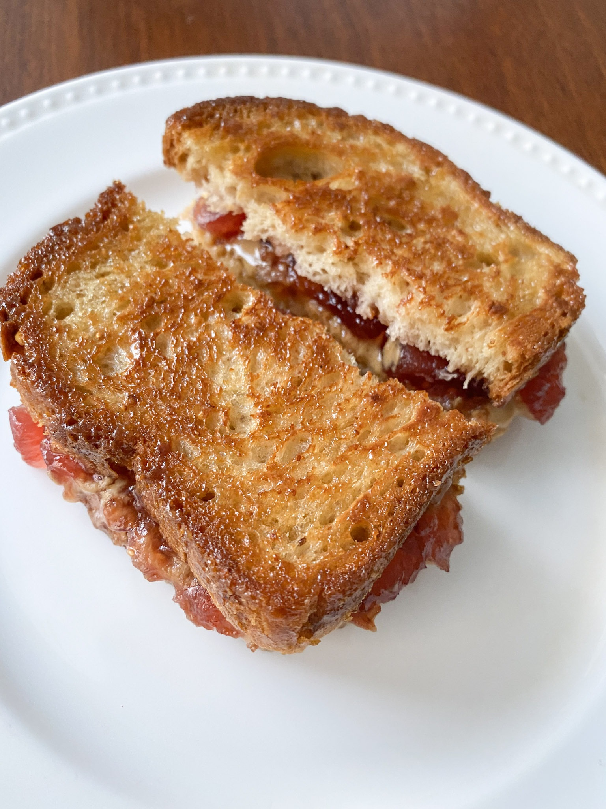

Grilled Peanut Butter and Jelly

An American classic updated!
A simple sandich with simple ingredients, two slices of bread with a slap of peanut butter and jelly grilled to golden perfection.
Ingredients
- Two teaspoons of butter
- Two slices of white bread
- Two teasppons of any flavor fruit jelly
- One teaspoon of peanut butter
Steps
- Gather all ingredients.
- Heat a griddle or skillet to 350 degrees F (175 degrees C).
- Spread butter on one side of each slice of bread. Spread jelly on the unbuttered side of one slice of bread; spread peanut butter on the other unbuttered side.
- Place bread slices together, so peanut butter and jelly are in the middle.
- Cook on the preheated griddle until golden brown and heated through, about 4 minutes per side.